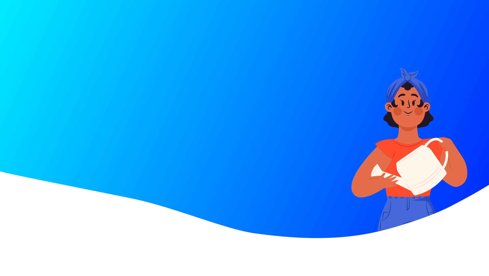

Yogasanas

Reclining Bound Angle Pose
- For heavy menstrual periods and pain as part of thefibroid symptoms, a restorative
- practice - similar to the ones used by pregnant women to help ease discomfort and
- further open the abdomen - might help. To perform Reclining Bound Angle Pose, or
- Supta Baddha Konasana, begin by sitting on your mat with knees bent out to the
- sides and the soles of your feet touching. Place thick blankets on either side of your
- hips to support your thighs and bring greater ease to this restorative posture. Next,
- use your hands to support yourself as you lean back and then lie flat on the floor,
- keeping your knees bent outward and resting your bent knees on the blankets.
- Close the eyes, breathe deeply and focus on sending the groins deep down into the
- pelvis, widening the back pelvis and narrowing the front. Allow the knees to slowly
- and naturally move closer to the floor as one focus on their groins. Do not push the
- knees down actively

Supported Bridge Pose
- To perform the supported version of Bridge Pose, or
- Setu Bandha Sarvangasana, keep a block or bolster by
- your mat as you lie down on your back and bend your
- knees, drawing the feet as close to the buttocks as
- possible and keeping the arms straight at your sides.
- Exhale and push your tailbone up while pressing your
- feet firmly into the floor, lifting your buttocks off the
- ground and supporting yourself by placing the block or
- bolster beneath your sacrum. Draw your shoulder
- blades together and down your back, and maintain
- active thighs and arms for additional support

Standing Forward Bend
- Standing forward bend, or uttanasana, will lift and
- strengthen your uterus. While in a standing position, bend
- your knees slightly and bend forward placing your hands on
- the floor, yoga blocks, or a chair. Slowly straighten your
- knees by lifting your tailbone up toward the ceiling. Hold for
- 30 to 60 seconds and repeat twice